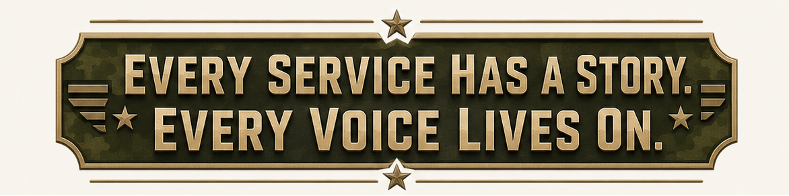

🎧
Audio, video & written
Every format of oral history, each with the right player and a full transcript.
A living library preserving the voices and experiences of those who served — across time, conflict, and geography.
“You’re not going to cure it. You’re going to have to learn to manage it. Those memories are never going away — they’re etched into you forever.”
More than a thousand veterans of past generations pass away each day, and their firsthand memories often go unrecorded. Veterans' Voices gives families, students, and communities a dignified place to preserve those stories — in the veteran's own words — so they live on for the generations who come after.
Explore stories organized by conflict, theater, and branch of service — from World War II to Afghanistan.
Each story opens with the right player — a real audio recording, a video, or the full written account and transcript.
Add a veteran's interview to the living library so their voice becomes part of the permanent record.
A Marine machine gunner in Vietnam, Nick Bernardino carried the memories of combat in silence for nearly fifty years — and now devotes himself to helping fellow veterans heal.
People always want to know — what’s it like being in combat? And it’s something that’s not really very easy to explain. But there are ways. We partnered with USC and did an exhibit here that people could walk through — you had goggles and all this other stuff, and it was like you were on patrol, for fifteen minutes. A lot of the vet community contacted me and said, “Nick, we don’t want you to have that exhibit — our guys will get through it, and we don’t want to trigger people.” I said, “Look, nobody has to go through it. But if we want to educate the public in a way that they understand, we’ve got to do it.” It was so popular we had to cut it down to seven and a half minutes, because too many people wanted to go through it.
Have you ever driven by a bad car accident, and you get that funny feeling in your stomach? That’s what you feel. And the other thing people learn is you never know when it’s coming. That instant — boom — you hear that first shot, or the first mortar coming in, and there’s this fear that grips you in a way that you almost feel paralyzed, but only for a second. And then all that training kicks in.
But what do you do with all that? You stuff it down. You’re trained to compartmentalize it, push it down, move on. And that’s the absolutely worst thing to do for you mentally. One of the things we do in PTSD training is pull out the manuals from the Vietnam War, and in those manuals you learn how the officers were trained after there was a KIA — killed in action. Keep them busy. You don’t talk about it. Can you imagine being with twelve of your friends, one of you gets killed, and you come back and don’t even talk about it? You just push it down, so deep. Because if you didn’t, what would happen? You couldn’t respond.
So here you are, coming home. And you see things you can’t imagine. It’s unimaginable to think what a machine gun, or an AK-47 on automatic, will do to the human body. Or napalm — you drop napalm because you want to get into an area, and you can imagine that much heat sucking that much oxygen out of the air all at once. And you see this, and you’re young. You begin to think — am I ever going to get out of this?
My very first patrol, I’d probably been in country maybe twenty-four hours. In the Marine Corps there’s no extra training once you hit Vietnam like there is in the Army. You’re completely trained when you’re there. You land in Da Nang, get your duty assignment, and you’re out. My first patrol, my friend — who I knew in boot camp and in infantry training — hits a booby trap, and it blows him up into the air, blows off his legs, and he comes down just one big bloody bundle of nothing. And you can imagine what that does to you. You’re standing there, and at that moment you’re thinking, “Oh my God, I’m not getting out of here.” But fortunately, again, that training comes through.
How did I get through it? I’m only going to speak from the Marines’ point of view, because that’s my training and that’s who I fought the war with. Marines are very loyal to each other. From boot camp on, you’re tied. To this day, when we see each other, we greet each other with “Semper Fi,” which is our fraternal saying. You walk through airports, through different parts of the country — another Marine, “Oorah.” That fraternity is so tight. They call it the tightest fraternity in the world. And so you rely on each other.
And for me — I was brought up Catholic. Italian Catholics, old Sicilians. Every other week I’m getting medals from all my aunts and uncles, and those little cards, scapulars. And I would just pray. They teach you in Catholic school that at some point you just turn it over to God. That was so drilled into me. It gave me hope. It gives you an anchor — because I sure as hell didn’t seem like I was in control out there.
You have no control there. None. And you’re fighting for it, but at some point you let go. And you really don’t process it either. I think the will to survive is so great — our bodies and our minds to survive — that somehow it carries you through. Very similar to professional athletes. When you just think, “I can’t take another breath, I’m done” — but the guy’s swimming toward you with the ball, you ain’t done. You’ve got to reach somewhere, and you don’t know where it is, but you reach and you do it.
There’s a book — Viktor Frankl, “Man’s Search for Meaning.” A story about the concentration camps. I actually read it for my training. The conditions were the same for everybody — awful, starvation, cold. So why does one man survive and another not? For him it was love — love for his wife. That grounded him. Intellectually he knew she was gone, but with that purpose and meaning, he was able to withstand what he was going through.
For me, and so many other vets — I’ve been in therapy for nine years. I go every week. I don’t miss.
If you get into a firefight, as scared and as confusing as it is — because it’s not like on TV. There’s smoke everywhere, explosions everywhere, people screaming, people bleeding, others shouting commands at you. It just envelops you. But somehow, through all that chaos, you still have a job to do — because if you don’t, you’re gone, and so are other people. I was a machine gunner. They like to knock out those machine guns; that M60 is a lot of lead coming their way. So you’ve got to be focused. I was on a place called Hill 10, we were getting overrun, and they were on me — I could feel and hear the bullets whizzing. When they’re close, it sounds like someone clapping. And what do you do? If you stop firing, they keep coming. So there’s nothing to do but get down as low as you can and just lay it on them.
Boxing came to me too, because I was a boxer. That comes to you — “hey, let’s go.” I love boxing. It’s competitive, and I love that you’re in control. It’s like any other sport — the more you do it, the more skillful you get. You can set people up, like chess.
In 1968 you go into Marine Corps boot camp, and they scream at you, right in your face — because they want to make it so you know the environment you’re going into. It’s unforgiving. They’d wake you up in the middle of the night — everybody gets a bucket, fill it with sand from the sand pit — and then say, “Spread it in your bed.” Then, “Get water, throw it in your bed, now sleep in it.” Sand and water all over you. It’s awful. But you’d better learn to endure that, because that’s what you’re going to be in the whole time. Down at Camp Pendleton there was Old Smoky, that one mountain we’d always have to climb — and if you couldn’t make it up, your guys had to carry you. We’d go out in the evening and there was nothing but mosquitoes, and you couldn’t even hit one — because making noise means you’re dead. Because then you’re in Vietnam, set up on an ambush, and making noise means you are dead. So that training, as difficult as it was, had purpose.
And then the confidence course. When you go there, they break you down — “you are lower than the lowest piece of whale mess in the deepest part of the ocean; you’re nothing but a maggot.” They break you down to nothing. But when you leave, you feel like there’s nothing you can’t do. You climb a twenty-foot rope, come down, grab another and swing across, scale two six-foot walls, climb nets, crawl through tunnels, climb a thirty-foot ladder of telephone poles that get further apart as you go up. And once you achieve all that, you really have confidence. Then we’d have “last man standing” — forty, fifty guys on the mats, and you fight each other, and the last man standing. The confidence was another thing that really helped you get through.
Sometimes you’re walking, no water, ninety-five degrees, ninety-five humidity, two little canteens, and you run out. You go to a rice-paddy dike, take your sock off, strain the muddy water through it, take these little halazone tablets that taste awful to sterilize it, and you drink it. Your tongue is swollen, you can hardly talk. But you push through. And if you can survive that and translate it into your life, there’s nothing you’re afraid to try, and you never give up. Life is tough. It throws a lot at you, and sometimes it seems overwhelming, but you push through. It’s like eating an elephant — take small bites at a time, but you stay on it. You don’t give up.
War is inexplicable. You capture prisoners, and you look at their wallets, and they have the same kind of family photos you do. What were they before? “I was a barber. I was a butcher. I was a baker.” I often say it’s like butchers and barbers and bakers all fighting each other. You see they have the same life, and yet you’re both in a position where you’d kill each other on sight.
When I came out, we didn’t have anything. Now they give you the VA. In our era — that’s why Vietnam veterans hid for fifty years. They weren’t welcome at home. That’s why so many turned to drugs and homelessness. There was nobody to talk to. The military wouldn’t talk. The VA wouldn’t recognize Agent Orange until 1984 — we had to sue them. They’d told us we could defoliate these forests and it wouldn’t be harmful. In 1984 the courts ruled in our favor. So there was nobody there — it was just a bunch of Vietnam veterans getting together.
But the idea of not giving up, and the confidence — it never left. Once you go through that, you realize there’s not too much that can take you off your game, at least mentally. Physically you may be a wreck, because you get hurt — you’re running all the time, falling, pulling muscles, like playing a football game every day. But nobody takes you out of the field over that.
What would I say to young people entering the military? Be sure it’s what you want to do. If you think it’s going to be like television, it’s not. And the second thing you really need to understand: if you get into combat, that’s it — your life will never be the same. You will never be the same person you are now. It’s going to change you forever. Those memories are never going away; they’re etched into you forever. You’re not going to cure it — you’re going to have to learn to manage it. So if you’re willing to do that, then it’s a decision you can live with. But understand: you’re changing forever. Boot camp itself you can get ready for — run five or six miles every day, do a hundred push-ups, ten pull-ups, every day, and you’ll make it through. In the Marine Corps you never walk, you run. And if you fall out on a run, your buddy has to carry you — so nobody wants to fall out.
But think about the deeper implication. Sometimes — and it’s very, very rare, I can’t emphasize how rare — it’s going to be up close, and you’re going to have to kill somebody. And that is really hard. And you’re going to make mistakes. For me — we were outside a hostile village, set up to run patrols. I kicked in a door, looking for the enemy, and I saw three people. Two were in a corner, moving. I opened up on those two; my other squad opened up on the other. And I have to live with this to this day — they weren’t the enemy. It was dark, they were silhouettes, and one of them was holding what turned out to be a big broom that you couldn’t see. But you’re scared, man. And so I’m in therapy for nine years, and to this day I’ve only been talking about it for about a month. I always kept it to myself. It took me nine years to be able to say that, because I thought nobody would understand. I’m seventy-eight. So probably until I was seventy-six years old I carried that. It’s a long time to carry something like that.
Why nine years? It’s so horrific that you just push it down, push it down — because the nightmares are awful. And you’re trained: “Hey, don’t bring that stuff up. Are you some kind of sissy?” You’re supposed to suck it up. Always suck it up. That’s all you hear. So for me and so many other vets, we suppressed it so deep that it comes out in other ways — nightmares, shortness of temper, drugs for some, alcohol for others. I never drank; I never judged those who did. For me, I just worked like crazy. I had goals I was going to achieve, and I achieved them.
I got inducted into the Orange County Hall of Fame — Kobe Bryant, Richard Nixon, Walt Disney — and you see me up there and go, “How did that happen?” They even have a street named after me. That’s what I was working toward. But all the while, I was holding all this stuff in, and it’s messing you up. The nightmares finally got so bad my wife got really concerned — she thought I was going to have a heart attack. So I went into therapy, and it was the best thing I’ve ever done.
There’s the suicide — twenty-two a day, vets. It’s not screaming for help. You’ve got to be open to accept help, which isn’t always easy. Every exhibit we do at Heroes Hall, I have a display: Get Help. If you’re feeling this stuff, get help. It’s very different now. We weren’t allowed to talk about it. Now the guys who come out have a mandatory meeting, and in combat they have therapists in the rear you can go to.
So here’s something I’m working on now. We’ve been losing veterans to suicide forever and can’t seem to get our arms around it. A while back, President Trump went to the fights, and Joe Rogan and Rick Perry were in his ear about alternative treatments for veterans. By that Monday he’d called Robert Kennedy to get it going. There had been a subcommittee — a Democrat, Congressman Correa, and a Republican, General Bergman, a one-star general — working four years on whether these treatments can help in a controlled environment, and it was about to die in Congress. But it got moving again, and an executive order was signed. Then I got the call: “Nick, form a task force and write the legislation to implement it.” So I have a committee — a doctor, the sheriff, the district attorney, the healthcare agency, the Under Secretary of Veterans Affairs by Zoom, the Orange County Business Council. We’ve had two meetings. These people are brilliant.
And we’re looking at Alzheimer’s too. The studies are incredible. Think of your brain as areas that, believe it or not, don’t always communicate with each other. But under the proper treatment, they do — and can actually rewire, create new pathways around the damage. When you listen to these researchers from UCI, from Harvard, it’s amazing, and they’re all independent. I get tired of doing the same old thing over and over while we’re still losing twenty-two people a day. Maybe we ought to try something else. I’m seventy-eight — I’d better hurry.
Here I am, a moderate Democrat, working on a Republican president’s order, because it’s all about the vets. I don’t care whose idea it was. It was a good idea. This is all about the vets.
What advice would I give young people in general? Be honest. Have character — character is the most important thing. When you have character and honesty, you can believe in yourself, you can rest at night, you can sleep. You don’t have to worry, “Am I going to be in trouble?” You can be who you want to be. My father used to say, “If you want to dig ditches for a living, dig ditches — because if you love it, in five years you’ll have the biggest ditch-digging company in the United States.” Good, honest work. And always give back. Whenever you give back, it comes back to you in so many ways — but more importantly, it builds character.
People say, “Be a good person — what is that?” Part of it is always being honest. Never have to lie. Don’t lie, because then you don’t sleep. It’s like — God gave us ten commandments. I can follow ten rules. You want to dye your hair purple? That’s not against the ten rules. Follow ten, be what you want. You’ll have a great life. It’s going to have its ups and downs — that’s part of it. But if you build good character, you understand it.
I love Gold Star families — the ceremonies. I work hard for them; I’d do anything for a Gold Star family. There was one mother — her son was a doctor, had a wife and a daughter. And I said to her, “It isn’t fair.” And she said, “In some ways, Nick, given the way life is, if I didn’t have a tragedy, that wouldn’t be fair.” I’ve kept that in my mind. So when bad things happen and you feel it’s not fair — bad things happen to everybody. If you didn’t have yours, that wouldn’t be fair. So don’t let it get you down. You just keep moving.
The same way the app works — pick a conflict and a branch, or search, and the stories filter instantly.
We were just kids, mostly. Farm boys and city boys who’d never seen the ocean. We did our jobs because the fella next to you was doing his. We looked out for each other. That was the whole of it.
Every format of oral history, each with the right player and a full transcript.
Browse and filter by conflict, theater, and branch — find any story in seconds.
Search names, places, and transcripts to surface exactly the voice you're looking for.
A simple, dignified form to add a veteran's interview to the permanent archive.
Calm, respectful, and premium — a place worthy of the people it honors.
One app for iPhone and Android, built to run smoothly on any modern phone.
For veterans and their families who want to preserve a story, and for students, teachers, and anyone who wants to learn history from the people who lived it.
Written accounts, audio recordings, and video interviews — each shown with the right player, plus the full transcript so every word is preserved and searchable.
By conflict (World War II, Korea, Vietnam, the Gulf War, Iraq, Afghanistan and more), by theater of service, and by branch — so any story is easy to find.
Yes. The app includes a simple submission form to add a veteran's details, photo, recording, and account to the archive.
Veterans' Voices is a non-commercial project built to preserve history and honor those who served.

Every voice added to the living library is kept for the generations who come after.
Coming to the App Store & Google Play